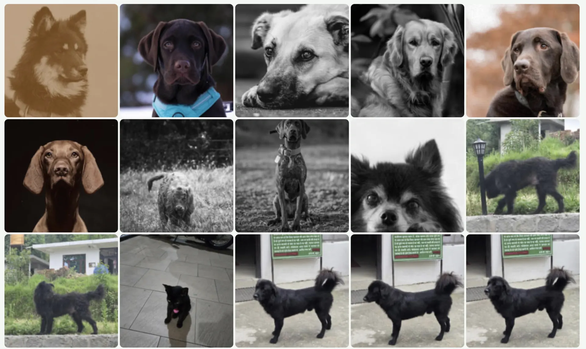
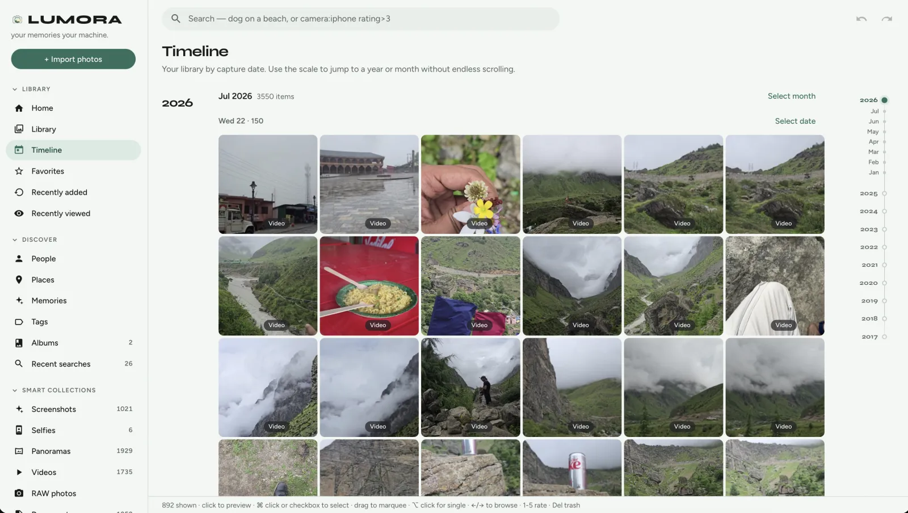
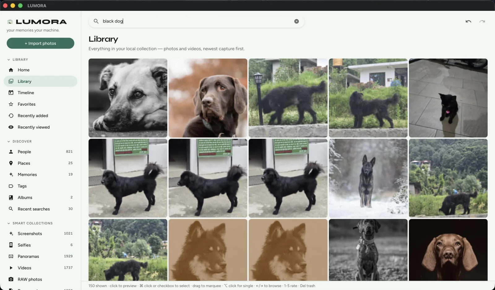
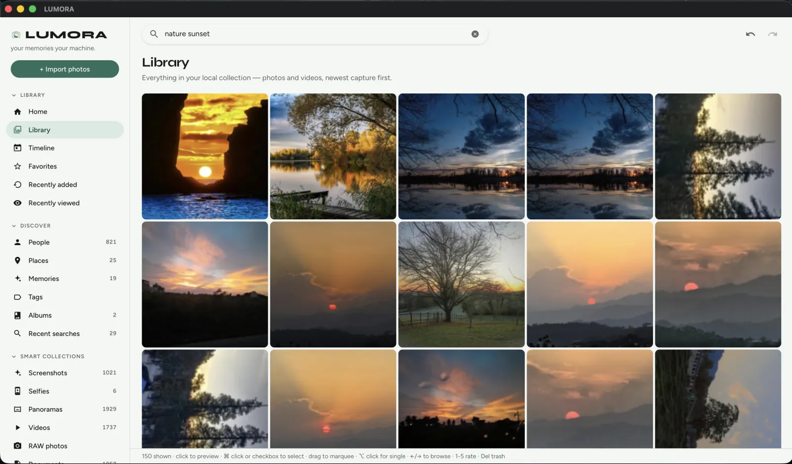
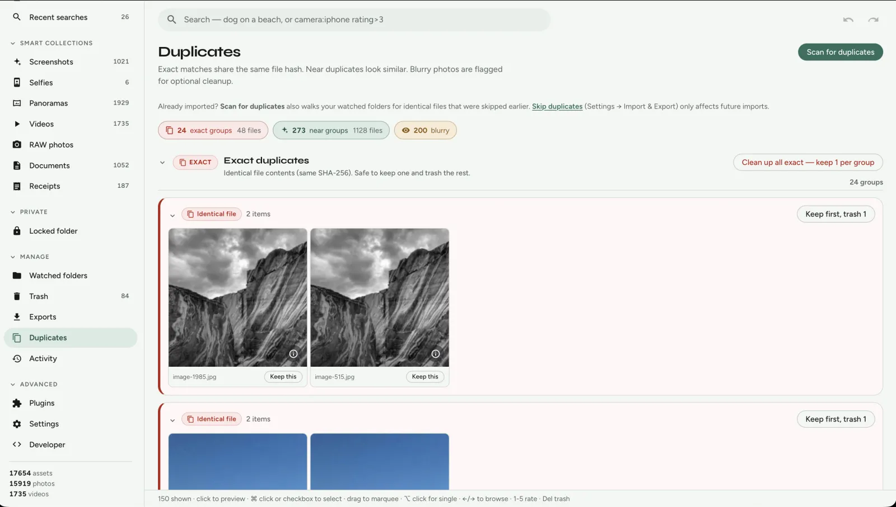
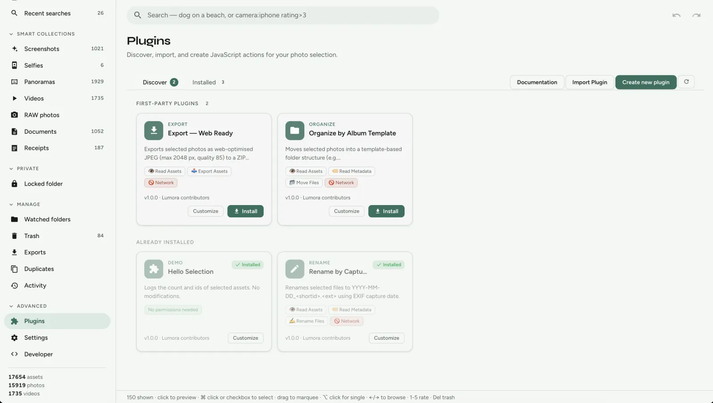

LUMORA
Your memories. Your machine.
The open-source alternative to Mylio Photos.
Search photos using natural language.
Rediscover forgotten memories.
Keep everything on your device.

Search results for black dog
From folder to search in minutes
Import locally. Index on-device. Search in plain language.
- Import Folder
- Index Photos
- Search:
mountain hike - Results Instantly Appear

Why choose LUMORA?
-
Google Photos Search Without Google
Natural-language search across your archive — on your disk.
-
Your Data Your Device
Originals stay where you put them. No cloud lock-in.
-
AI Search Runs Offline
Optional CLIP, OCR, and faces — inference never leaves the machine.
-
Extensible Plugin System
Sandboxed JavaScript actions you can read, fork, and ship.
Rediscover memories you forgot existed.
Search years of photos instantly. Find family vacations. Find old receipts. Find forgotten moments. All without uploading a single image.
- On this day Photos from past years on today’s date.
- Weekend trips Clusters from short date ranges when you were away.
- Timeline Browse by year and month the way you remember eras.

Try a search
Click an example. Every result below is a real screenshot of that exact query running against a local library.
Search: black dog

Captured on a local library with CLIP installed — no cloud query.
How LUMORA compares
Built for people who want Mylio-class local search without a subscription — read the full Mylio alternative page.
| Feature | LUMORA | Mylio | Google Photos |
|---|---|---|---|
| Open Source | Yes | No | No |
| Local AI Search | Yes | Yes | Cloud |
| No Subscription | Yes | No | No |
| OCR | Yes | Yes | Yes |
| Face Recognition | Yes | Yes | Yes |
| Plugin System | Yes | Limited | No |
| Local Storage | Yes | Yes | No |
Who is LUMORA for?
-
Families
Keep decades of memories searchable forever.
-
Photographers
Manage 100,000+ photos locally.
-
Creators
Search screenshots, references and assets instantly.
-
Privacy enthusiasts
Own your data forever.
Contributors welcome
Help grow an open-source memory platform — code, plugins, or docs.
What else is in the box
Library indexing, albums, duplicates cleanup, Places, an encrypted vault, and sandboxed plugins — all offline by default.
Library
Index where the files already live
Point LUMORA at folders on disk. Originals stay put; the app builds a fast local index of hashes, EXIF, thumbnails, and blur scores.
Search
Global text-to-image across your library
Full-text plus optional CLIP embeddings — blended on-device, never sent to a hosted API.

On-device AI
Intelligence that stays offline
Every model is optional. Install what you need from Settings → AI. Delete derived data anytime — originals stay untouched.

Cleanup
Delete with confidence
Exact duplicates, near lookalikes, and blurry shots — review before you trash.

Privacy vault
Lock what should stay private
Encrypted Locked folder with on-device keys — no cloud unlock, no hosted escrow.

Plugins
Extend LUMORA with your own actions
Sandboxed JavaScript on your selection — rename, export, organise. No network. Every plugin is a folder on disk.

Desktop-native stack
Small binary, Rust backend, React UI — open source under MIT.
- Shell
- Tauri v2
- UI
- React + TypeScript
- Backend
- Rust
- Database
- SQLite + FTS5
- ML
- ONNX · CLIP · OCR · Faces
- Plugins
- JavaScript · sandboxed
- Platforms
- Mac · Windows · Linux
Start local. Stay local.
Download LUMORA, import a folder, and search your memories — without uploading a single frame.